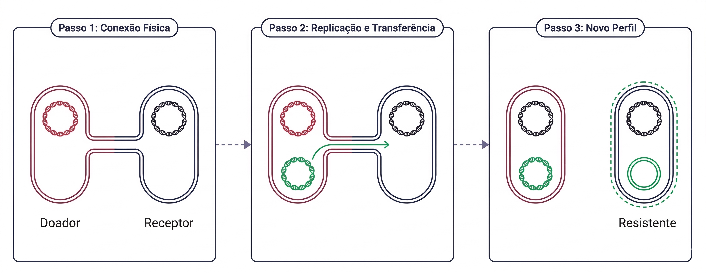

Na conjugação, a transferência genética ocorre por contato direto entre duas bactérias viáveis. Geralmente, uma das células possui um plasmídeo conjugativo que contém genes responsáveis pela formação de uma estrutura de ligação, como o pili sexual. Esse pili estabelece conexão física entre a bactéria doadora e a receptora, formando uma ponte citoplasmática através da qual o material genético pode ser transferido.
Durante o processo, o plasmídeo é replicado e uma das fitas de DNA é transferida para a célula receptora. Ao final, ambas as bactérias passam a possuir cópia do plasmídeo. Como muitos plasmídeos carregam genes que codificam β-lactamases, enzimas modificadoras de aminoglicosídeos ou determinantes associados a bombas de efluxo, a bactéria receptora pode adquirir imediatamente novo perfil de resistência 5.